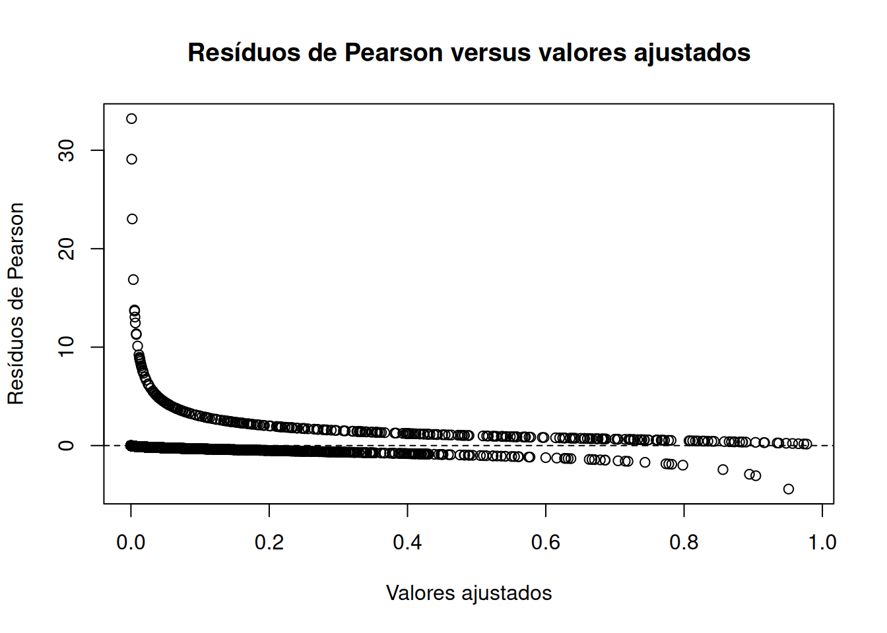
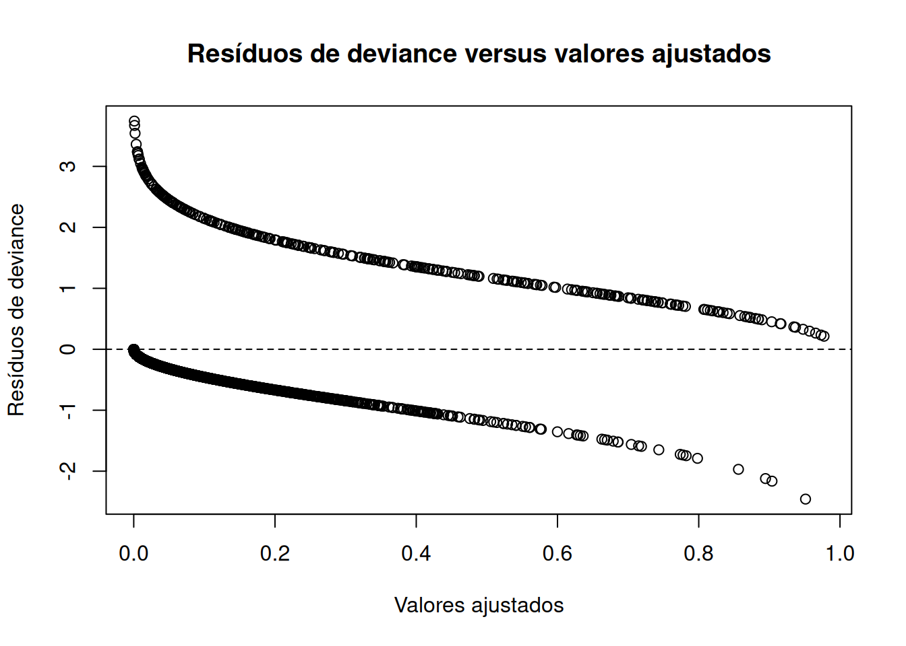
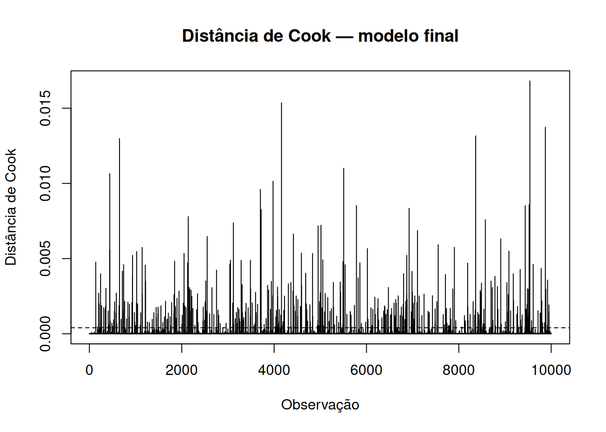
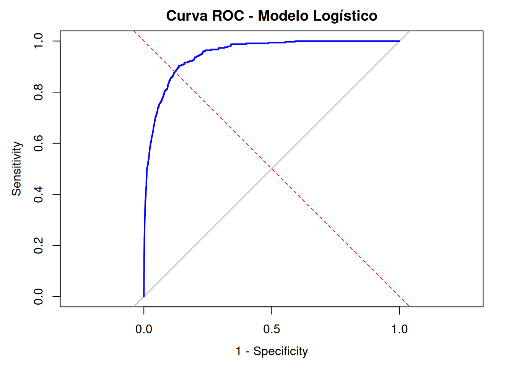

── Conflicts ────────────────────────────────────────── tidyverse_conflicts() ──
✖ dplyr::filter() masks stats::filter()
✖ dplyr::lag() masks stats::lag()
✖ dplyr::select() masks MASS::select()
ℹ Use the conflicted package (<http://conflicted.r-lib.org/>) to force all conflicts to become errors
library(hnp)library(lmtest)
Loading required package: zoo
Attaching package: 'zoo'
The following objects are masked from 'package:base':
as.Date, as.Date.numeric
library(pROC)
Type 'citation("pROC")' for a citation.
Attaching package: 'pROC'
The following objects are masked from 'package:stats':
cov, smooth, var
Na base há 333 (3,3%) clientes inadimplentes e 9667 (96,7%) clientes adimplentes.
Metodologia estatística
Seja \(Y_i\) uma variável aleatória binária, assumindo valor 1 quando o cliente está inadimplente e 0 caso contrário. Seja \(\boldsymbol{x}_i\) o vetor de variáveis explicativas associadas ao cliente. A probabilidade condicional de inadimplência é definida por
\[
\pi_i = P(Y_i=1\mid \boldsymbol{x}_i).
\]
Como a variável resposta é binária, considera-se a distribuição Bernoulli: \[
Y_i\mid \boldsymbol{x}_i \sim \operatorname{Bernoulli}(\pi_i),
\]
Os modelos lineares generalizados (MLGs) estabelecem uma relação entre a probabilidade condicional de ocorrência do evento e o preditor linear, por meio de uma função de ligação:
em que \(\beta_0,\beta_1,\ldots,\beta_p\) são os parâmetros do modelo. Para investigar a influência das características dos clientes sobre a probabilidade de inadimplência, foram consideradas cinco funções de ligação: logit, probit, cauchit, logarítmica e log-log complementar (cloglog).
Modelo logístico (ligação logit)
O modelo logístico utiliza a função de ligação logit, definida por
Os coeficientes representam variações no logaritmo das chances (odds) de inadimplência. Consequentemente, a exponenciação dos coeficientes fornece razões de chances (odds ratios), facilitando a interpretação dos efeitos das variáveis explicativas.
Modelo probit
O modelo probit utiliza a função de ligação definida pelo inverso da função de distribuição acumulada da distribuição normal padrão:
\[
g(\pi_i)=\Phi^{-1}(\pi_i),
\]
em que (^{-1}) representa a função quantil da distribuição normal padrão.
Essa especificação estabelece uma relação entre o preditor linear e a probabilidade de inadimplência por meio da distribuição normal padrão. Os coeficientes representam variações na escala latente normal, não sendo interpretados diretamente como razões de chances.
A interpretação pode ser dada olhando para o sinal do coeficiente \(\beta_j\) associado à variável explicativa: \(\beta_j>0\) implica que um aumento na variável \(X_j\) aumenta a probabilidade de \(Y = 1\), enquanto \(\beta_j<0\) implica que um aumento na variável \(X_j\) diminui a probabilidade de \(Y = 1\), sempre mantendo as demais variáveis constantes.
Modelai cauchit
O modelo cauchit utiliza uma função de ligação baseada na distribuição de Cauchy padrão, sendo definida por
\[
g(\pi_i)=F_C^{-1}(\pi_i),
\]
em que \(F_C^{-1}\) representa a função quantil da distribuição de Cauchy padrão.
Essa função apresenta caudas mais pesadas do que as distribuições normal e logística, permitindo uma resposta menos abrupta nas regiões extremas do preditor linear. Dessa forma, constitui uma alternativa para investigar a sensibilidade dos resultados à escolha da função de ligação.
Essa especificação permite modelar diretamente o logaritmo da probabilidade de inadimplência. Entretanto, diferentemente das ligações logit, probit e cauchit, a função inversa da ligação logarítmica não garante automaticamente probabilidades no intervalo \((0,1)\). Portanto, é necessário verificar se as probabilidades ajustadas permanecem no intervalo admissível, pois valores superiores a 1 não são probabilidades válidas.
Modelo complemento log-log
O modelo complemento log-log utiliza a função de ligação
Essa especificação apresenta comportamento assimétrico, diferentemente das ligações logit, probit e cauchit, que são simétricas em torno de zero na escala do preditor linear. A ligação complemento log-log pode ser particularmente útil em situações nas quais a ocorrência do evento apresenta comportamento assimétrico ou está associada a processos de risco acumulado.
Especificação dos modelos completos
Inicialmente, todos os modelos foram ajustados com a fórmula inadimplencia ~ estudante + saldo_devedor + renda_anual. Essa especificação permite comparar as distribuições e funções de ligação mantendo constantes a resposta, as covariáveis e a amostra utilizada. O modelo com ligação logarítmica não convergiu e, portanto, não foi incluído na análise.
Com base nos dois critérios, o modelo logístico (função de ligação logit) teve menores valores de AIC e BIC, sendo portanto o modelo escolhido para dar prosseguimento às análises.
Seleção de variáveis no modelo logístico
A seleção de covariáveis foi conduzida por meio de testes de exclusão individual (função drop1()) baseados no Teste da Razão de Verossimilhanças (LRT).
A variável renda_anual (\(\text{LRT} = 0{,}14\); \(p = 0{,}7115\)) não apresentou contribuição estatisticamente significativa para o modelo e foi removida. A comparação entre AIC e BIC do modelo completo e do modelo sem renda_anual também indicou que o modelo reduzido tem melhor ajuste.
# Sem renda_anualmodelo_logit2 <-glm( inadimplencia ~ estudante + saldo_devedor,family =binomial(link ="logit"),data = dados)drop1(modelo_logit2, test ="Chisq")
O gráfico de envelope simulado confirma que todos os resíduos estão contidos dentro das bandas de confiança de \(95\%\), indicando que o modelo logístico especificou adequadamente a estrutura de relação entre as variáveis.
Resíduos de Pearson versus valores ajustados
plot(fitted(modelo_logit2),residuals(modelo_logit2, type ="pearson"),xlab ="Valores ajustados",ylab ="Resíduos de Pearson",main ="Resíduos de Pearson versus valores ajustados")abline(h =0, lty =2)

Em regressão logística, o resíduo de Pearson é dado por \(r_i = \frac{y_i - \hat{\pi}_i}{\sqrt{\hat{\pi}_i(1 - \hat{\pi}_i)}}\). Como \(y_i\) só assume dois valores, todos os pontos caem obrigatoriamente sobre a curva superior (quando \(y_i = 1\)) ou sobre a curva inferior (quando \(y_i = 0\)). Isso não indica falta de ajuste, apenas reflete a natureza discreta da resposta.
Resíduos de deviance versus valores ajustados
plot(fitted(modelo_logit2),residuals(modelo_logit2, type ="deviance"),xlab ="Valores ajustados",ylab ="Resíduos de deviance",main ="Resíduos de deviance versus valores ajustados")abline(h =0, lty =2)

A interpretação aqui é similar a dos resíduos de Pearson.
Análise de Pontos Influentes (Distância de Cook)
cook <-cooks.distance(modelo_logit2)plot( cook,type ="h",xlab ="Observação",ylab ="Distância de Cook",main ="Distância de Cook — modelo final")abline(h =4/nobs(modelo_logit2), lty =2)

A avaliação de pontos influentes mostra valores de Distância de Cook extremamente baixos (o pico máximo é em torno de 0,017), embora vários pontos ultrapassem a linha pontilhada de referência (\(4/n = 4/10.000 = 0,0004\)). No entanto, na prática, considera-se que uma observação tem influência real sobre as estimativas dos coeficientes (\(\hat{\beta}\)) apenas quando a Distância de Cook se aproxima de \(0,5\) ou \(1,0\). Como o maior valor é \(0,017\) (muito abaixo de \(0,5\)), nenhuma observação individual está distorcendo o ajuste do modelo.
Curva ROC e Área sob a curva
O modelo logístico estima a probabilidade \(\widehat{\pi}_i\) de ocorrência do evento de interesse. Entretanto, para classificar uma observação como pertencente à classe 0 ou à classe 1, é necessário estabelecer um ponto de corte para \(\widehat{\pi}_i\).
Por exemplo, considerando o ponto de corte de 0,5:
Se \(\widehat{\pi}_i \geq 0{,}5\), o cliente é classificado como inadimplente (1).
Se \(\widehat{\pi}_i < 0{,}5\), o cliente é classificado como adimplente (0).
A comparação entre as classificações previstas pelo modelo e as classificações efetivamente observadas produz a matriz de confusão.
Observado: Inadimplente (1)
Observado: Adimplente (0)
Previsto: Inadimplente (1)
Verdadeiro positivo (VP)
Falso positivo (FP)
Previsto: Adimplente (0)
Falso negativo (FN)
Verdadeiro negativo (VN)
Os quatro resultados são interpretados da seguinte forma:
Verdadeiro positivo (VP): cliente inadimplente corretamente identificado pelo modelo.
Falso positivo (FP): cliente adimplente incorretamente classificado como inadimplente.
Falso negativo (FN): cliente inadimplente incorretamente classificado como adimplente.
Verdadeiro negativo (VN): cliente adimplente corretamente identificado pelo modelo.
Sensibilidade
A sensibilidade (sensitivity), também denominada taxa de verdadeiros positivos (True Positive Rate – TPR), mede a capacidade do modelo de identificar corretamente as observações que pertencem à classe positiva.
No contexto da inadimplência, representa a proporção de clientes efetivamente inadimplentes que foram corretamente identificados pelo modelo.
Interpretação: quanto maior a sensibilidade, menor a quantidade de clientes inadimplentes que o modelo deixa de identificar.
Especificidade
A especificidade (specificity), também denominada taxa de verdadeiros negativos (True Negative Rate – TNR), mede a capacidade do modelo de identificar corretamente as observações que pertencem à classe negativa.
Matematicamente:
\[
\text{Especificidade}= \frac{VN}{VN+FP}
\]
No contexto da inadimplência, representa a proporção de clientes efetivamente adimplentes que foram corretamente identificados pelo modelo.
Interpretação: quanto maior a especificidade, menor a quantidade de clientes adimplentes classificados incorretamente como inadimplentes.
Curva ROC
A curva ROC (Receiver Operating Characteristic) é uma representação gráfica utilizada para avaliar a capacidade discriminatória de um modelo de classificação binária.
Ela relaciona a sensibilidade (eixo vertical) com a taxa de falsos positivos (eixo horizontal), para diferentes pontos de corte das probabilidades estimadas.
Cada ponto da curva ROC representa um par de valores de sensibilidade e taxa de falsos positivos, obtido a partir de determinado ponto de corte.
A interpretação da curva considera:
Curva próxima ao canto superior esquerdo: indica elevada sensibilidade e elevada especificidade, caracterizando boa capacidade discriminatória.
Curva próxima à diagonal: indica capacidade discriminatória semelhante à de um classificador aleatório.
Curva abaixo da diagonal: indica desempenho inferior ao de uma classificação aleatória, considerando a orientação convencional das classes.
Área sob a curva ROC (AUC)
A AUC (Area Under the ROC Curve) corresponde à área sob a curva ROC e resume a capacidade discriminatória do modelo em um único valor.
Seu valor varia entre 0 e 1, sendo interpretado convencionalmente da seguinte maneira:
AUC
Interpretação
0,50
Discriminação equivalente ao acaso
0,60-0,70
Discriminação fraca
0,70-0,80
Discriminação aceitável
0,80-0,90
Boa discriminação
Acima de 0,90
Excelente discriminação
AUC representa a probabilidade do modelo atribuir uma probabilidade de inadimplência maior a um cliente efetivamente inadimplente do que a um cliente efetivamente adimplente, escolhidos aleatoriamente.
Para o nosso modelo, temos:
# Probabilidades estimadasprobabilidades <-predict(modelo_logit2, type ="response")# Curva ROCroc_modelo <- pROC::roc(response = dados$inadimplencia,predictor = probabilidades,levels =c(0, 1),direction ="<")# Gráfico da curva ROCplot( roc_modelo,col ="blue",lwd =2,main ="Curva ROC - Modelo Logístico",legacy.axes =TRUE)# Linha de classificação aleatóriaabline(a =0, b =1, lty =2, col ="red")

# Área sob a curvapROC::auc(roc_modelo)
Area under the curve: 0.9495
# Intervalo de confiança de 95%pROC::ci.auc(roc_modelo)
95% CI: 0.9401-0.959 (DeLong)
# Ponto de corteponto_corte <- pROC::coords( roc_modelo,x ="best",best.method ="youden",ret =c("threshold", "sensitivity", "specificity"),transpose =FALSE)ponto_corte
No modelo, a área soba curva ROC foi de 0,9495, indicando excelente capacidade discriminatória do modelo logístico. Ou seja, ao selecionar aleatoriamente um cliente inadimplente e um cliente adimplente, existe aproximadamente 94,95% de probabilidade de o modelo atribuir uma probabilidade estimada de inadimplência maior ao cliente efetivamente inadimplente. O intervalo de confiança de 95% para a AUC foi [0,9401; 0,9590].
O ponto de corte ótimo para a classificação foi 0,03168. Ou seja, probabilidades acima desse valor serão classificadas como inadimplentes (1). Isso era uma sensibilidade de 90,39% e especificidade de 86,27%. Assim, considerando esse limiar de classificação, o modelo identifica corretamente aproximadamente 90% dos clientes inadimplentes e 86% dos clientes adimplentes.
Interpretação do modelo final
No modelo logístico, aplicamos a exponencial sobre os coeficientes para interpretarmos a razão de chances (odds ratio) entre ser inadimplente em relação a ser adimplente.
summary(modelo_logit2)
Call:
glm(formula = inadimplencia ~ estudante + saldo_devedor, family = binomial(link = "logit"),
data = dados)
Coefficients:
Estimate Std. Error z value Pr(>|z|)
(Intercept) -1.075e+01 3.692e-01 -29.116 < 2e-16 ***
estudanteSim -7.149e-01 1.475e-01 -4.846 1.26e-06 ***
saldo_devedor 5.738e-03 2.318e-04 24.750 < 2e-16 ***
---
Signif. codes: 0 '***' 0.001 '**' 0.01 '*' 0.05 '.' 0.1 ' ' 1
(Dispersion parameter for binomial family taken to be 1)
Null deviance: 2920.6 on 9999 degrees of freedom
Residual deviance: 1571.7 on 9997 degrees of freedom
AIC: 1577.7
Number of Fisher Scoring iterations: 8
A variável estudante apresentou coeficiente negativo (-0,7149), com razão de chances igual a 0,4893 (IC 95%: 0,3650-0,6511). Esse resultado indica que clientes estudantes apresentam chances de inadimplência aproximadamente 51,1% menores (1-0,4893 = 0,5107) do que clientes não estudantes, considerando constante o saldo devedor.
Por outro lado, o saldo devedor apresentou coeficiente positivo (0,005738), com razão de chances igual a 1,005755 (IC 95%: 1,0053-1,0062). Portanto, cada unidade adicional no saldo devedor está associada a um aumento de aproximadamente 0,58% nas chances de inadimplência. Considerando um aumento de 100 unidades monetárias, esse acréscimo corresponde a aproximadamente 77,5% nas chances de inadimplência, mantendo constante a condição de estudante.
Classificação de novas observações
Vamos classificar novos clientes usando esse modelo.
# Classificação usando o ponto de corte# Classificaçãocorte <- ponto_corte$thresholdnovos_clientes <- novos_clientes |>mutate(classificacao =ifelse( probabilidade >= corte,"Inadimplente","Não inadimplente" ) )novos_clientes
cliente estudante saldo_devedor probabilidade classificacao
1 Cliente 1 Não 500 0.0003779224 Não inadimplente
2 Cliente 2 Não 1200 0.0205572347 Não inadimplente
3 Cliente 3 Sim 2000 0.5029586777 Inadimplente
Um cliente que não é estudante e tenha saldo devedor de 500 ou 1200 não é classificado como inadimplente. Por outro lado, um cliente que seja estudante e tenha saldo devedor de 2000 é classificado como inadimplente pelo modelo.